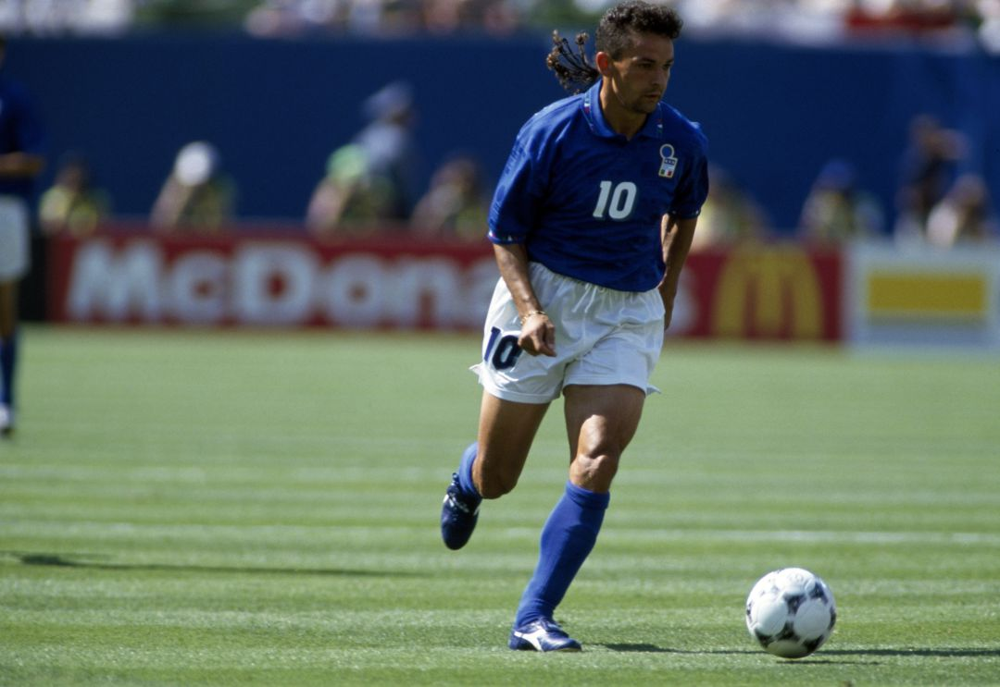
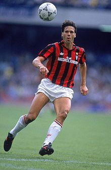

Top 30 futbolistas de todos los tiempos
- Nacionalidad: España
- Ultimo club: F.C. Porto
- Posición: Portero
El «Santo» defendió la portería del Real Madrid durante 16 años y se consolidó como uno de los
mejores porteros de su época. Su grandeza se multiplicó con la selección española con la que fue decisivo
para conquistar 2 Eurocopas y el Mundial de Sudáfrica 2010. En su carrera ganó todos los títulos posibles
salvo la desaparecida Copa Confederaciones.
- Nacionalidad: Países Bajos
- Ultimo club: Chelsea
- Posición: Centrocampista, mediapunta y delantero
El "todocampista" neerlandés se convirtió en uno de los jugadores de la década de los 80. Tras
explotar en el PSV Eindhoven la rompió en el Milan de Sacchi donde ganó 6 ligas, 3 Copas de Europa y ganó
el Balón de Oro de 1987. Con la selección de Países Bajos marcó el primer gol de la final de la Eurocopa de 1988 conquistada por la oranje.

- Nacionalidad: Italia
- Ultimo club: Brescia Calcio
- Posición: Delantero
Il divino codino se convirtió en la estrella del fútbol italiano de los años 90. Su calidad y
capacidad goleadora le hizo triunfar en la Fiorentina y en la Juventus, donde Ganó el Balón de Oro de 1993.
Un año mas tarde condujo a Italia a la nal de la Copa del Mundo de Estados Unidos pero su error en la tanda
de penaltis impidió que se proclamase campeón. Milan, Bologna, Inter y Brescia siguieron disfrutando de uno
de los jugadores con más talento de la historia.
- Nacionalidad: Alemania
- Ultimo club: MetroStars
- Posición: Centrocampista
Una leyenda del fútbol germano y Mundial. Lothar Mattahus jugó 5 Copas del Mundo con Alemania y
se alzó como campeón en el campeonato de Italia 90. Jugó 22 temporadas como profesional y triunfó en todos
sus equipos donde jugó (Bayern, Inter, Monchengladbach…). Elegido en el Dream Team Balón de Oro de France
Football. Desempeñó como sobre todo como centrocampista, aunque en sus últimos años jugó como líbero.
Su única espina es no haber podido ganar la Liga de Campeones.

- Nacionalidad: España
- Club actual: Vissel Kobe
- Posición: Centrocampista
Iniesta marcó el gol que dio a España el primer Mundial de su historia en Sudáfrica 2010. Fue la
principal pieza junto a Xavi Hernández del Tiki-Taka que triunfó con la selección española y con el FC
Barcelona. Con los culés jugó durante 20 temporadas y ganó 4 Copas de Europa para convertirse en una de la mayores
leyendas del fútbol español.
- Nacionalidad: Francia
- Ultimo club: Stade de Reims
- Posición: Delantero
Elegido el tercer mejor jugador de la historia de Francia vivió la mejor época del Stade Reims,
equipo histórico en su país. Después reforzó el Real Madrid de Di Stéfano con el que consiguió 3 Copas de
Europa.

- Nacionalidad: Italia
- Ultimo club: F.C. Internazionale
- Posición: Centrocampista o delantero
La leyenda italiana que da nombre al campo del Inter y el Milan es de los pocos bicampeones
del mundo. Como capitán de la azzurra conquistó los mundiales de 1934 y 1938. Quizá sea un jugador menos
valorado de lo que merece.
- Nacionalidad: Italia
- Ultimo club: A.C. Milan
- Posición: Libero Defensa
El legendario capitán de Italia y el Milan es uno de los mejores defensas de la historia. Con
Arrigo Sacchi lideró una defensa casi imbatible que provocaba que los rivales cayeran continuamente en fuera
de juego. Ganó 3 Copas de Europa como rossonero y un Mundial con Italia en España 82.
- Nacionalidad: Unión Soviética
- Ultimo club: Dinamo Moscú
- Posición: Portero
La estatua de Lev Yashin custodia el estadio moscovita de Luzhniki donde reside el espíritu del
considerado como el mejor portero de la historia. La "Araña Negra" defendió durante toda su carrera la
portería del Dinamo de Moscú y en 1963 se convirtió en el primer y único portero en ganar el Balón de Oro.
- Nacionalidad: Inglaterra
- Ultimo club: Waterford United F.C.
- Posición: Mediocampista ofensivo o delantero
El legendario delantero del Manchester United es considerado por la FIFA como el mejor jugador
inglés de todos los tiempos y uno de los mejores futbolistas europeos del siglo XX. Con la selección inglesa
ganó el Mundial de 1966.

- Nacionalidad: Brasil
- Ultimo club: America do Rio
- Posición: Delantero
O Baixinho (el bajito) marcó una época como un goleador. Sus goles y su imaginación dentro del
área le convirtieron en uno de los mejores delanteros del Mundo siendo el protagonista del Mundial de
Estados Unidos 1994. Su talento fue casi tan grande como su indisciplina, con la que convivió a lo largo
de su carrera. "Si no salgo por la noche, no marco" llegó a reconocer el brasileño

- Nacionalidad: Italia
- Ultimo club: Milan A.C.
- Posición: Defensa
Después de 25 temporadas en la élite como símbolo del Milan, Maldini se ha ganado un lugar entre
los mejores defensas de la historia. Levantó 26 títulos, entre los que se encuentra 5 Copas de Europa.
Jugó 902 partidos como rossonero y 126 con Italia, con la que no pudo conseguir ningún título pero llegó
hasta dos finales internacionales (Mundial 1994 y Eurocopa 2000).
- Nacionalidad: Brasil
- Ultimo club: Kashima Antiers
- Posición: Mediapunta
El Pelé blanco es considerado como uno de los mejores brasileños de la historia. Fue el gran
símbolo del Flamengo, con quién jugó durante 18 temporadas. Fue la gran estrella del Brasil que deslumbró
en el Mundial de España en 1982. Actualmente es el futbolista que más goles ha anotado de tiro libre a lo
largo de la historia (101).
- Nacionalidad: Alemania
- Ultimo club: Fort Lauderdale Strikers
- Posición: Delantero centro
"Torpedo" Muller es considerado como el Mejor Goleador de todos los tiempos. Llegó a un Bayern que
estaba en Segunda y junto con Beckenbauer lo convirtió en uno de los mejores clubes del mundo. Gerd Muller
marcó 735 goles en 758 partidos, ganó 2 Botas de Oro como máximo goleador europeo, fue 7 veces máximo
goleador de la Bundesliga y hasta en 4 ocasiones fue el máximo anotador en la Copa de Europa. Tenía el
récord de goles en un año natural con 84, hasta que se lo quitó Messi en 2012 (91). Ganó un Balón de Oro en
1970 y fue campeón del Mundo con Alemania en 1974.
- Nacionalidad: Irlanda del Norte
- Ultimo club: Tobermore United
- Posición: Extremo mediapunta ofensivo
El "Quinto Beattle" es posiblemente el mejor jugador de la Historia del Manchester United.
Su calidad le llevó a ser el Balón de Oro más joven de la historia (22 años) en 1968. Sin embargo,
después de ganar la Copa de Europa de ese año dejó de centrarse en el fútbol. La esta, las mujeres y,
sobre todo el alcohol nos privó de ver lo mejor de un jugador que estaba llamado a ser de los mejores de
todos los tiempos.

- Nacionalidad: Países Bajos
- Ultimo club: AC Milan
- Posición: Delantero
Marco Van Basten ha sido uno de los mejores delanteros de la Historia. El holandés jugó en Ajax,
Milan y Países Bajos, con los que ganó la EURO 88. Su gol imposible de volea quedará para la posteridad.
Un 9 con alma de 10 que se tuvo que se tuvo que retirar con 30 años debido a las continuas lesiones.
- Nacionalidad: Portugal
- Ultimo club: New Jersey Americans
- Posición: Delantero
Eusébio Da Silva Ferreira es una de las mayores leyendas del Fútbol Portugués. El Mozambiqueño fue
una estrella en el Benca y en la selección lusa, con la que realizó un gran Mundial de Inglaterra en 1966.
Un año antes, ganó su primer y único Balón de Oro.

- Nacionalidad: Brasil
- Ultimo club: Fluminense F.C.
- Posición: Centrocampista
Fue uno de los mejores jugadores del Mundo, aunque su estancia en lo más alto duró menos de los
esperado. Llegó al PSG procedente del Gremio de Porto Alegre y en el Mundial de Corea y Japón 2002 se
proclamó campeón del mundo con Brasil. En 2003 chó por el Barcelona y reactivó la historia triunfal del club
culé. Tras ganar el Balón de Oro de 2005 y la Copa de Europa de 2006, "Dinho" cambió sus prioridades y pasó
de divertirse en el campo a divertirse fuera de él.
- Nacionalidad: Brasil
- Ultimo club: Olaría
- Posición: Delantero
Pese a ser víctima de una poliomelitis a los seis años, Garrincha se convirtió en uno de los
mejores futbolistas de las historia del fútbol brasileño. Sus regates le convirtieron en una leyenda del
Botafogo y la selección brasileña con la que ganó los Mundiales de 1958 y 1962 (donde fue nombrado mejor
jugador del torneo). Su juego era tan divertido que le llamaban "La Alegría del Pueblo"
- Nacionalidad: Francia
- Ultimo club: Real Madrid C.F.
- Posición: Centrocampista
Zinedine Zidane ha sido uno de los mejores jugadores en el cambio de siglo. La explosión del
francés fue tardía pero irrumpió en el fútbol como uno de los centrocampistas más elegantes de la historia.
Sus controles, regates y maniobras con el balón coincidían con el oportunismo de una estrella que siempre
solía aparecer en las grandes citas. De hecho, fue la gran estrella del primer Mundial conquistado por
Francia en 1998. Tras pasar por el Cannes y el Burdeos, rmó por la Juventus y acabó su carrera en el Real
Madrid de los Galácticos.
- Nacionalidad: Francia
- Ultimo club: Juventus
- Posición: Centrocampista
Para la mayoría de franceses Michel Platini sigue siendo considerado como el mejor jugador de
la historia del fútbol francés. Su estelar Eurocopa de 1984 en la que marcó 9 goles en 5 partidos le dio
el primer título internacional a les bleus. Platini jugó en el Nancy, Saint-Étienne y en la Juventus, donde
ganó 3 Balones de Oro consecutivos (1983-1984-1985) y mantuvo una rivalidad con Maradona por ser la
estrella del Calcio de los 80.
- Nacionalidad: Hungría
- Ultimo club: Real Madrid C.F.
- Posición: Delantero
Su nombre es sinónimo de gol para la FIFA, que lo eligió como el mejor goleador del siglo XX y
le dio su apellido al título de Mejor Gol del Año. Formó parte de la histórica selección húngara de los
"Magiares Mágicos" y, ya mayor y con sobrepeso, triunfó como goleador en el Real Madrid de Di Stéfano que
ganó 5 Copas de Europa. Marcó 746 goles en 754 partidos siendo uno de los mayores goleadores de la historia
del fútbol.
- Nacionalidad: Brasil
- Ultimo club: Corinthians
- Posición: Delantero
Ronaldo es conocido como "O fenômeno" (el fenómeno) y es considerado como uno de los mejores
delanteros de la historia. En su primera etapa en el PSV, Barcelona e Inter de Milan fue comparado con
Pelé, aunque las graves lesiones que sufrió le alejaron del pódium de los más grandes. A pesar de todo
resurgió siendo la estrella y el máximo goleador de Brasil en la conquista del Mundial 2002 y terminó su
carrera en la élite como Galáctico del Real Madrid.
- Nacionalidad: Alemania
- Ultimo club: New York Cosmos
- Posición: Libero meciocentro defensivo
"El Kaiser" Beckenbauer lideró a Alemania en la conquista de la Eurocopa de Bélgica en 1972 y
después a ganar el Mundial de 1974. Desde la posición de líbero modernizó el fútbol con una salida de balón
y una arrancada que no se ha vuelto a ver desde entonces.
- Nacionalidad: Países Bajos
- Ultimo club: Feyenoord de Róterdam
- Posición: Centrocampista
Cruy es uno de los mejores futbolistas de la historia pero, por encima de todo es uno de los
más importantes e inuyentes. Con su juego trasladó al Ajax a otra dimensión consiguiendo la primera de las
3 Copas de Europa que ganaría con el conjunto holandés. Devolvió al Barcelona su grandeza y terminó por
cambiar su historia ya como entrenador.

- Nacionalidad: Portugal
- Club actual: Juventus F.C.
- Posición: Delantero
El delantero luso se ha ido superando así mismo hasta protagonizar un duelo legendario con
Lionel Messi por ser el mejor jugador de lo que llevábamos de siglo XXI. El portugués se convirtió en el
máximo goleador de la historia del Real Madrid (450 goles en 438 partidos) y dejó su sello en la Champions
League como el Máximo Goleador de la Historia de la competición. Con 5 orejonas amenaza el récord de Paco
Gento (que ganó 6 Copas de Europa). Ha superado los 750 goles en toda su carrera y con la selección
portuguesa ha superado los 100 tantos y ha conquistado los dos únicos trofeos internacionales de su historia;
la Eurocopa 2016 y la Nations League (2019).

- Nacionalidad: Argentina/España
- Ultimo club: R.C. Deportivo Español
- Posición: Delantero
"La Saeta Rubia" fue uno de los Mejores Jugadores de la Historia. Comenzó en River, pasó a
Millonarios de Bogotá y tras un polémico chaje entre Madrid y Barça, acabó siendo el Mejor Jugador de la
historia del conjunto merengue. Fue Internacional con Argentina y con España, y ganó 2 Balones de Oro
antes de retirarse en el Espanyol y comenzar su carrera como entrenador.
- Nacionalidad: Brasil
- Ultimo club: New York Cosmos
- Posición: Delantero
El Rey Pelé es considerado por muchos el mejor jugador de todos los tiempos. El brasileño
jugó sus mejores años en el Santos pero se dio a conocer al Mundo con la selección brasileña, con la que se
convirtió en el único jugador en ganar 3 Mundiales (1958, 1962 y 1970). En 1969 Pelé consiguió ser
el primer futbolista en alcanzar los 1000 goles y, solo contando partidos ociales, es el segundo máximo
goleador de la historia del fútbol con 767 tantos en 842 partidos.

- Nacionalidad: Argentina
- Ultimo club: Boca Juniors
- Posición: Centrocampista
Un Dios para muchos y un demonio para otros (sobre todo para los defensas).
Su legado se resume en ver su talento y potencia con el balón en los pies. lesiones y sanciones está
alejado de los números de otros futbolistas pero, a pesar de todo, los que le vieron jugar dicen que
no hubo otro futbolista igual. En Argentinos Juniors explotó como estrella, en Boca Juniors se conrmó como
ídolo bostero y en el FC Barcelona vivió un calvario de lesiones y polémicas que no le dejaron triunfar.
Su llegada a Nápoles revolucionó el fútbol italiano al convertir a un equipo humilde en doble campeón del
Scudetto y campeón de la Copa de la UEFA. Con Argentina, se perdió el Mundial 1978 en el último momento
pero protagonizó la mayor exhibición individual de la historia de los mundiales en México 1986. Maradona
marcó sus dos goles más emblemáticos ante Inglaterra en cuartos de nal y guio a la albiceleste a la
conquista de su segunda Copa del Mundo.

- Nacionalidad: Argentina
- Club actual: F.C. Barcelona
- Posición: Delantero/centrocampista
A sus 33 años, Lionel Messi ha marcado más de 700 goles y, con varios años de fútbol por
delante, amenaza con superar la insuperable barrera de 805 goles que alcanzó Josef Bican.
El argentino del FC Barcelona ha batido todos los récords anotadores en el club, siendo
máximo goleador de la Liga en 7 ocasiones y ganando 6 Botas de Oro como máximo goleador europeo.
Es el único jugador en la historia en ganar 6 Balones de Oro y ha superado una incontable
cantidad de récords. Su único lunar lo tiene con la selección argentina, donde a pesar de ser
el máximo goleador histórico no ha conseguido ganar ningún trofeo.